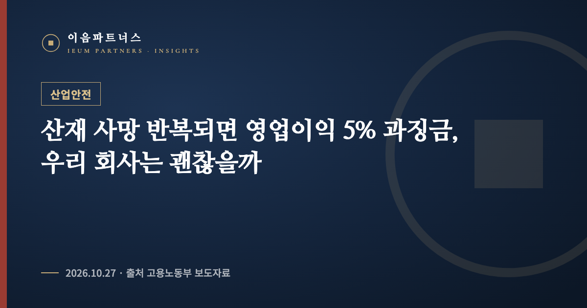

산재 사망 반복되면 영업이익 5% 과징금, 우리 회사는 괜찮을까

산업재해로 사람이 숨지면 지금까지는 형사처벌이 중심이었습니다. 그런데 2026년 10월 27일 공포된 개정 산업안전보건법은 여기에 과징금(행정기관이 위반에 매기는 금전 제재)과 사업 등록 말소 요청까지 더했습니다. 이 글에서는 무엇이 바뀌었는지, 언제부터 적용되는지, 대표님이 지금 준비할 것을 정리합니다.
핵심 조항은 2027년 1월과 4월에 차례로 시행되지만, 과징금은 시행일부터 1년 동안의 사망 사고를 따지기 때문에 준비는 지금부터 해 두는 편이 좋습니다. 우리 회사의 안전보건 관리 상태가 궁금하시다면 카카오톡 채널 이음파트너스로 편하게 문의해 주세요.
무엇이 바뀌었나
고용노동부는 이번 개정이 “현장의 안전 권리를 실질적으로 보장하기 위한 종합적인 제도 개선책”을 담고 있다고 설명했습니다(고용노동부 보도자료). 대표님이 알아 두실 주요 내용과 시행일은 다음과 같습니다.
| 구분 | 내용 |
|---|---|
| 반복 사망 과징금 | 안전·보건조치 의무를 어겨 1년간 3명 이상이 숨지면 3년 평균 영업이익의 5% 범위에서 부과, 2027년 4월 28일 시행 |
| 작업중지 확대 | 급박한 위험이 우려되는 경우에도 작업중지 요구 가능, 하청 노동자도 원청에 직접 요구 가능, 2027년 4월 28일 시행 |
| 등록 말소 요청 | 동시에 2명 이상 사망 등으로 3년간 영업정지를 2회 이상 받고 다시 대상이 되면 등록 말소·취소 요청 가능, 2027년 4월 28일 시행 |
| 신고 포상금 | 산업안전보건법령 위반을 신고한 사람에게 포상금 지급 근거 마련, 2027년 1월 28일 시행 |
| 안전보건관리비 | 계상 의무가 건설공사 발주자에서 도급인과 다른 업종까지 확대, 건설업 2027년 4월 28일·그 외 2027년 10월 28일 시행 |
과징금은 어떻게 매겨지나
과징금은 위반 횟수, 기업 규모, 사망한 근로자 수 등으로 기준 금액을 정한 뒤, 위반 정도와 전체 근로자 대비 사망자 비율, 재발 방지 노력 등을 따져 늘리거나 줄입니다. 최종 부과는 과징금심의위원회 심의를 거치며, 구체적인 절차와 징수 시기는 하위법령에서 정해질 예정입니다.
눈여겨볼 부분은 영업이익이 없거나 영업이익의 5%가 30억 원에 못 미치는 회사도 30억 원 범위에서 과징금이 매겨질 수 있다는 점입니다. 걷힌 과징금은 산재보험기금으로 들어가 산재 예방에 쓰입니다.
우리 회사에는 어떤 영향이 있을까
과징금은 1년에 3명 이상 사망이라는 요건이 있어 모든 회사에 바로 해당하지는 않습니다. 다만 작업중지 요구 범위가 넓어지고 하청 노동자도 원청에 직접 요구할 수 있게 되면, 협력업체와 함께 일하는 현장은 공정 일정과 계약 관리까지 영향을 받을 수 있습니다.
신고 포상금 제도도 2027년 1월부터 시행되어 현장의 위험을 누구나 신고할 수 있는 길이 넓어집니다. 정부는 시행에 맞춰 신고센터를 열 계획이라고 밝혔습니다. 평소 안전조치를 기록으로 남겨 두는 일이 더 중요해질 수 있습니다.
대표님이 지금 확인할 것
- 현장에서 작업중지 요구가 들어왔을 때 누가 판단하고 어떻게 조치할지 절차를 정해 두었는지
- 하청·협력업체와 함께 하는 작업에서 원청으로서 안전조치를 어떻게 나누고 기록하는지
- 건설업이 아니어도 도급 공사를 맡길 때 안전보건관리비를 계상해야 하는 대상인지(2027년 10월 시행)
- 시행령·시행규칙 등 하위법령이 나오면 과징금 산정 기준을 다시 확인할 것
참고한 자료
- 노사정이 함께 만드는 안전한 일터 구축을 위한 제도적 기반 -산업안전보건법 개정·공포- — 고용노동부 보도자료 (2026.10.27)
개정법이 우리 회사 현장과 계약 구조에 어떤 의미인지 함께 살펴보고 싶으시다면 카카오톡 채널 이음파트너스로 문의해 주세요.
※ 이 글은 일반적인 정보 제공을 위한 것으로, 개별 사안은 세무사·노무사 등 전문가와 함께 확인하시기 바랍니다.